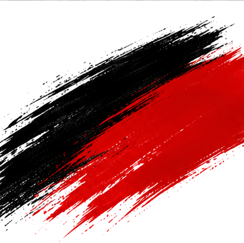
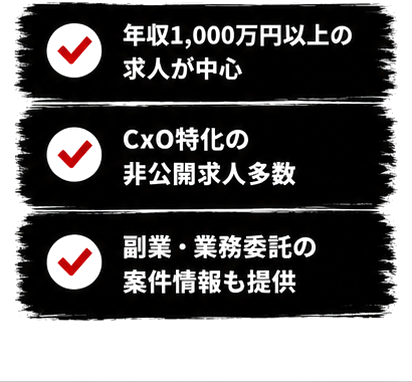
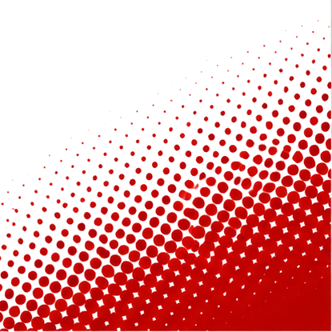
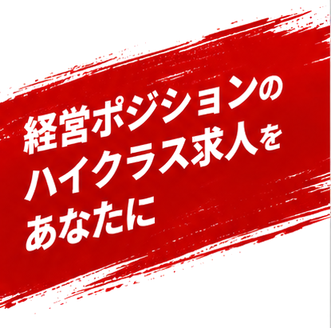
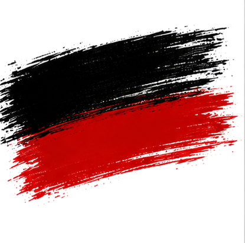
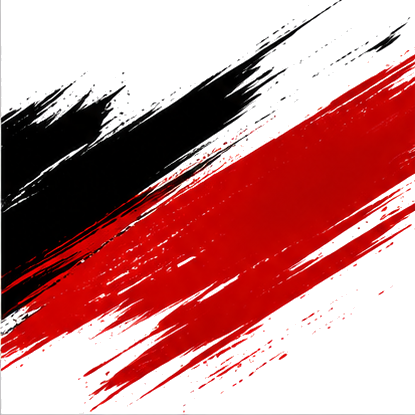

経営ポジションのハイクラス求人をあなたに。エージェント全員がCxOポジション経験者のCXOエージェント。


。一般的な転職エージェントとは、立っている場所が違います。私たち自身が経営を経験してきたからこそ、あなたの市場価値とキャリアの設計図を、経営目線で一緒に描けます。
スタートアップのフェーズ感、経営チームの質、事業の実態。一般のエージェントには見えないものを、自分たちが経営者だからこそ読める。候補企業について本音で話せます。
一般媒体に出ない求人の多くは、経営者間の紹介・口コミで動く。私たち自身がそのネットワークの中にいるから、表に出ないポジションにアクセスできます。
今すぐCXOになれなくても、そこへ向かうキャリアの組み立て方がある。実際に経営してきたからこそ、リアルな道筋を一緒に考えられます。
「まだ動くか分からない」「市場価値を確かめたい」という段階から話を聞きます。経営キャリアは早く動くほど選択肢が広がる。情報収集から始めてください。
年収レンジ、ポジションの質、契約形態の柔軟さ。経営層・幹部候補に特化しているからこそ提供できる、3つの強みがあります。正社員はもちろん、副業・業務委託での経営参画もご相談ください。

代表・CFO・CTOなど、実際に経営の現場に立ってきたメンバーが、あなたのキャリアを直接担当します。

代表 / エージェント
吉川 隼大
味の素株式会社を経て独立。スタートアップ経営・地方創生事業を手掛け、現在プレイバッカーズ代表取締役。経営者のリアルな視点で転職を支援する。

エージェント / 投資家
野上 隆徳
Beyondge株式会社代表。スタートアップへの投資・コンサルティングを通じ、経営層の採用・人材要件に精通。

エージェント / CFO経験
清水 ※担当者
複数のスタートアップでCFO・COOを歴任。上場前後の経営体制構築に深く関与。財務・事業両面から候補者を評価できる。

エージェント / 事業投資
石川 ※担当者
M&A・事業投資のバックグラウンドを持つ。経営に近いポジションの目利きと、候補企業の実態把握に強みを持つ。
※ 担当者の写真・氏名は公開時に実際のものに差し替えます。


私たちが扱う求人の多くは、経営者・投資家・社外取締役のネットワークを通じて集まります。一般の転職媒体には載らない、スタートアップ・成長企業の経営ポジション。このインナーサークルにアクセスできるのは、自分たちも経営者だからです。
経営層・幹部候補の
非公開ポジション
年収レンジ（最高
3,000万円規模）
※ 掲載はイメージです。実際の非公開求人はご登録後にご案内します。
CFO 候補
製造業（売上300億規模） ／ 非公開
COO
ITスタートアップ（Series B） ／ 東京
事業本部長
消費財メーカー（上場） ／ 非公開
CTO
DXコンサルティングファーム ／ 非公開

面談はすべてオンライン対応。情報収集だけの段階から、お気軽にご利用ください。
フォームから2分で完了。費用はかかりません。
担当がオンラインで経歴・希望・方向性をヒアリング。正直に話してください。
ネットワーク経由の非公開ポジションを中心に、厳選してご提案します。
面接対策から年収・役職交渉、入社後フォローまで伴走します。
求職者の方への費用は一切かかりません。登録・相談・求人紹介・選考サポートすべて無料です。
もちろんです。「情報収集したい」「市場価値を知りたい」という段階からの相談を歓迎しています。経営キャリアは早めに動くほど選択肢が広がります。
ありません。ご本人の同意なく企業へ情報を開示することは一切ありません。秘密厳守で対応します。
はい。事業会社での深い実績や変革のポテンシャルがあれば、CFO・COO・CTO候補として評価される求人があります。「いつか経営に」という方も歓迎です。
ご利用いただけます。面談はオンライン対応。リモート前提の求人や地方企業の経営ポジションも取り扱っています。

登録・相談は完全無料。
「まだ転職するか分からない」という段階でも構いません。